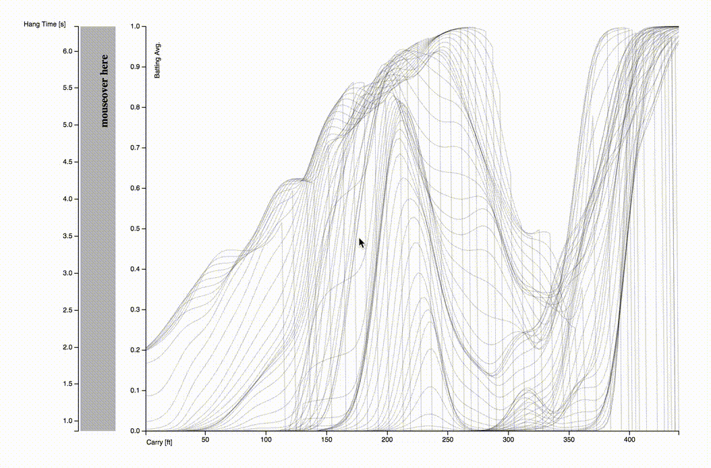
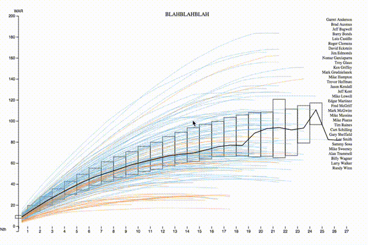
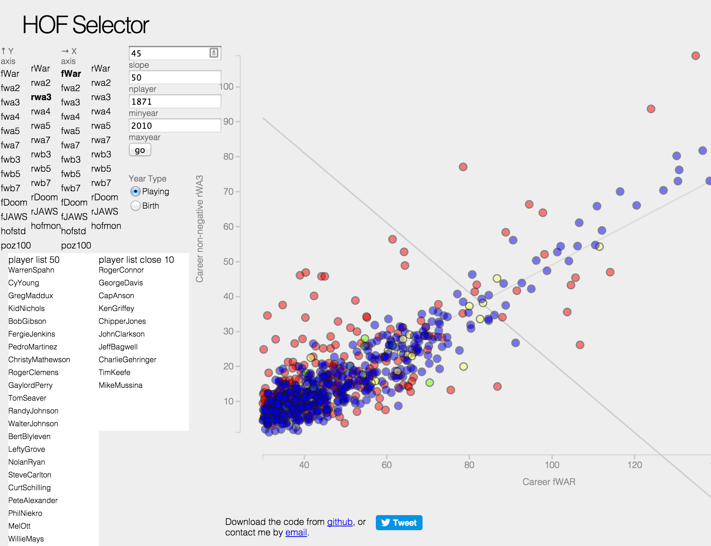

Graphicacy Challenge - Visualizing the careers of the top 20 baseball players
Batted ball data - bat. avg. vs exit speed, launch angle
Batted ball data - bat. avg. vs carry, hang time

Visualizing a proposal for an automatic baseball HOF
Baseball HOF Tracker - Changes in votes from 2015 to 2016
Best-to-worst years of the 2016 baseball HOF candidates - year by year
Best-to-worst years of the 2016 baseball HOF candidates - cumulative

HOF selector - compare baseball players peak vs career values

Visualizing the top 256 baseball careers with rotation frequency
Generating a crossword puzzle
An analysis of the Ramones song catalog